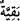

şeylerdir. Nitekim Allah Teâlâ: “Allah fâizin bereketini giderir, sadakaları ise
bereketlendirir.” (el-Bakara, 2/276) buyurmuştur.
“
/ bıraktığı” kelimesinin Allah’a izâfe edilmesi bu kazancın şerefini gösterir.
Nitekim ‘Beytullah’ ve ‘Allah’ın devesi’ tabirleri de böyledir. Çünkü, ölçüyü ve tartıyı
tam olarak yaptıktan sonra geri kalan helal rızık, kendisine şeref bahşedilme hakkını
kazanmıştır.
Şerhu’ş-Şir‘a’da şöyle der: “Hiç kimse, alış-veriş ederken hile ve laf kalabalığı ile
malını cazip gösterme yoluna gitmesin. Çünkü böyle yapmakla rızık artacak değildir.
Aksine rızkın bereketi gider. Böyle yollarla azar azar mal biriktirenlerin malını Allah
bir anda tamamen yok eder ve sâhibine de sadece malın her bir zerresinin mesuliyeti
kalır. Sözgelimi, fazla gözüksün diye süte su katan bir adamın inekleri bir sel felaketine
maruz kalarak telef olmuş da küçük kızı adama şöyle demiş: “Babacığım süte kattığın
sular birikti birikti ve sonunda inekleri telef etti.”
Cenab-ı Hak âyette, hakkı tam olarak verdikten sonra geri kalan kârın hayırlı
olabilmesi için mü’min olmayı şart koşuyor. Çünkü tam olarak vermenin sağlayacağı
fayda, yâni sevap kazanmak ve azaptan kurtulmak ancak îman etmek suretiyle elde
edilir. Çünkü kâfirler ölçü ve tartıyı tam olarak yapsalar da yapmasalar da cehennem
azabında sürekli kalacaklar, hem ilâhî rızâdan hem de Allah’ın vereceği sevaptan
mahrum olacaklardır.
“Fakat ben sizin üzerinizde bir bekçi değilim.” Yâni sizi günah ve kabahatlerden
korumak için gönderilmedim. Ben sadece bir tebliğci, hayrın ne olduğuna dikkat çeken
ve nasîhat eden bir kimse olarak gönderildim. Bu görevimi de ifa etmiş bulunuyorum.
Ben tebliğ edilmesi şart olan şeyleri sana söyledim
Sen benim sözümden ister öğüt al, ister bıkkınlık göster
Bilesin ki gerek ahkâmda gerekse muâmelatta adâlet, Allah’ın yeryüzündeki
terâzisidir. Adaletten ayrılmak, kulların cezâlandırılmasını gerektirir. Bu sebeple
zulümden uzak durmak gerekir. “Zulüm”den maksad, başkalarının zararına olan her
şeydir. Adâlet ise asla başkalarının zararına olmayan şeydir.
İkrime (r.a.): “Tartı ve ölçüde hîle yapan herkesin cehennemlik olduğuna şehadet
ederim.” demiştir. Ona: “Ölçüye ve tartıya tam olarak kim riâyet ediyor?” diye
sorulunca şöyle cevap vermiştir: “Medine’de kendisi için tartılmasını istediği gibi
tartan, kendisi için ölçülmesini istediği gibi ölçen bir Allah’ın kulu neredeyse kalmadı.
Allah Teâlâ ise bu şekilde davrananlara “Ölçü ve tartıda hile yapanlara yazıklar
olsun.” (el-Mutaffifin, 83/1) buyuruyor.”
Saîd b. Müseyyeb de şöyle diyor: “Ölçüye ve tartıya hakkıyla riayet edenlerin
bulunduğu bir yere gittiğin zaman orada çok kal, ölçüyü ve tartıyı eksik yapanların
bulunduğu bir yere gittiğin zaman ise orada hiç durma.”
Bir hadiste şöyle buyrulmuştur: “Hıyânetin ortaya çıktığı bir toplulukta